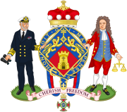

Ма́ргарет Хи́льда Тэ́тчер, бароне́сса Тэ́тчер — премьер-министр Великобритании в 1979—1990 годах, лидер Консервативной партии в 1975—1990 годах, баронесса с 1992 года. Первая женщина, занявшая этот пост, а также первая женщина, ставшая премьер-министром европейского государства. Премьерство Тэтчер стало самым продолжительным в XX веке. Получив прозвище «железная леди» за резкую критику советского руководства, она воплотила в жизнь ряд консервативных мер, ставших частью политики так называемого «тэтчеризма».
Будучи главой правительства, провела политические и экономические реформы для преодоления того, что она считала упадком страны. Её политическая философия и экономическая политика основывались на дерегуляции, в особенности финансовой системы, обеспечении гибкого рынка труда, приватизации государственных компаний и уменьшении влияния профсоюзов. Высокая популярность Тэтчер во время первых лет её правления уменьшилась из-за рецессии и высокого уровня безработицы, но снова увеличилась во время Фолклендской войны 1982 года и экономического роста, что привело к её переизбранию в 1983 году.
Тэтчер была переизбрана в третий раз в 1987 году, но предложенный закон о подушном налоге (англ. poll tax) и взгляды на роль Британии в Европейском союзе были непопулярны среди членов её правительства. После того, как Майкл Хезелтайн оспорил её лидерство в партии, Тэтчер была вынуждена подать в отставку с поста главы партии и премьер-министра.
